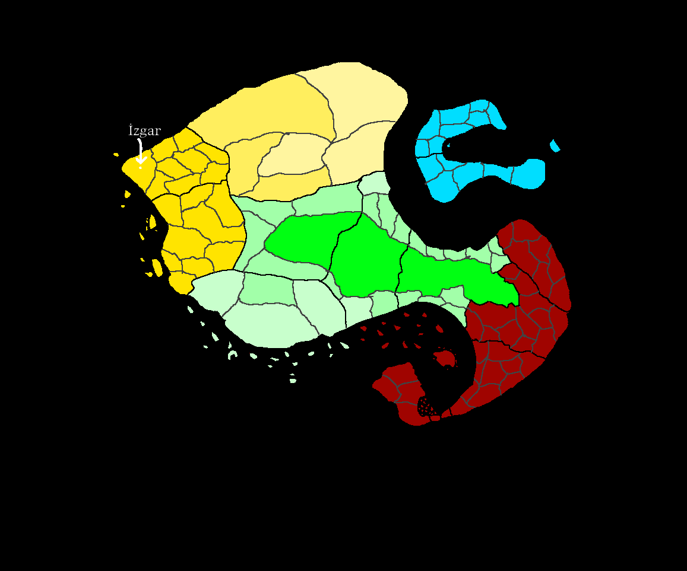

15. 重逢
————————————
從這一話開始，由於主角們已經靠著 Evlotheusna 的魔法習得克扎塔語，大部分對話將會以中文書寫。
————————————
2022.08.07（日）11:20，扎比利亞聯邦帝國答臘利維亞省 (Ðaralīvia) 伊茲加爾區 (İzgār Zōno) 野外森林（距離 Īzgar 村還有大約100公尺）
“Oléce! I think I saw something familiar!” Evlotheusna 做了一個手勢叫停隊伍，“Just let me take a look, won’t take long…”
Evlotheusna 蹲下身看著插在地上的一根生鏽的鐵棍，她左右打量，然後站起身說：“I’m sure we’re very close to the village now…(我肯定我們已經距離村子很近了…)”
“Τι ήταν αυτό; (那是啥？)” 蕾米莉亞問。
“My mark, I set it there three years ago. (我的記號，三年前插在那的。)” Evlotheusna 說，“Can’t believe it’s still here. (它居然還在。)”
Evlotheusna 隨後帶領他們沿著一條路往前走，不消一會，他們就來到了村口。
“Wait…that is…(等等，那是…)” Yuriya 似乎看見了誰，飛快地衝了上前，“Pa! (爸！)”
那個人聽到了呼喊，轉頭看見了 Yuriya，也連忙上前來：“Kóra! Yúriya! (女兒！尤莉婭！)”
眼前的男人有著一臉濃密的絡腮鬍，身穿一件黑色、金邊的大袍，頭戴象徵著一國之君的王冠。他一路小跑著到了 Yuriya 公主前，將其擁入懷中：“女兒啊！我們等你等得好苦！”
“父王…” Yuriya 哽咽道，“我好想你們…”
兩人抱在一起過了一段時間，老國王擡起頭來，向主角們說道：“想必你們就是把小女護送回來的恩人吧？非常感激你們，一路上一定很辛苦吧？”
“沒有沒有…這不算什麽。” 蕾米莉亞回答，“如果沒有她的話，我們現在説不定還在外面的雪地裏面迷路。”
“這裏很冷，讓我領你們到臨時的政府總部説話吧。” 老國王以撒説道。
老國王引領衆人到了在村子東南部的臨時總部之中，這裏説是總部，其實就是兩棟稍微大一點的民房。
“那麽，請問幾位來自哪裏？” 到了會議室，國王開口問。
“我們從遙遠的東半球來到這裏，” 蕾米莉亞說，“我和在那邊的三個女孩是最初的船員，當初是爲了逃難才向著這片未知的大陸航行。”
“——後來，我們在海上遇到了那邊的兩位魔族，他們似乎是從一個叫斯塔庫尼亞 (Stacunia) 的國家逃難出來的。”
“爲了逃離被吸血鬼占領的祖國。” 亞歷山大補充。
“就是如此。” 蕾米莉亞繼續說，“然後我們又遇到了你們的公主殿下，就一路向著這個國家航行過來了。”
“——等我們靠岸之後，又因一次遭遇而遇到了 Evloþeúsna，就是在那邊的女孩。”
“原來如此啊…” 老國王隨後又抛出一個提問，“請問閣下的種族是？”
蕾米莉亞閉上雙眼嘆了口氣，隨後還是決定誠實回答：“如陛下所見，鄙人是吸血鬼。”
此話一出，房間内隨即一片譁然，外交官阿雷沃 (Álevol) 出於本能地後退了一步，背脊頂著墻壁。禁衛軍領袖尼妥 (Nítos) 也立即緊握劍柄，準備拔劍出鞘。
“你們都冷靜，我命令你們立即為自己對這位小姐的無禮行爲道歉！” 以撒王站了起來，“這位小姐沒有要攻擊我們的意思。”
“算了罷，畢竟你們正在和吸血鬼打仗啊…” 蕾米莉亞說，“但是我要聲明一點：我不是這個世界的吸血鬼，我來自另一個世界，而且本來是人類。”
“明白了，我再次為部下對您的無禮而道歉。” 以撒王回答，隨後，他站起身，對眾人說道：“大家，既然公主平安歸來了，那麼我們就應當好好慶祝一番！阿雷沃，你去通報村民們，我們要花一天的時間準備，明天晚上慶祝公主的回歸。”
隨後，以撒王轉向主角們：“各位旅行者，本王雖然很感激你們把公主帶回來，卻沒法給予你們任何回報。如你們所見，本國的大部分領土已經被吸血鬼侵占，我們帝國最後的根據地也岌岌可危。在這樣的情況下…”
“不，我們要求的不多。” Asa’ela 打斷了國王，“我們只需要一個正常的定居點，簡陋一點沒有所謂，再來就是貴國的國民身份。”
“另外，如果你們想的話…” 蕾米莉亞補充道，“我們願意協助你們與吸血鬼之間的戰爭，我在以前的世界活了500年，學了不少包括政治、軍事之類的知識，也見證了500年以來的歷史發展。我相信自己的經驗可以幫助你們抵禦吸血鬼。”
“唔…” 老國王思索了很久，隨後他擡起頭，“這是一件關乎國家未來的大事，我們内閣之間要討論一番才可以決定，暫時不能回答你。”
“那首先我可以知道貴國的政府是如何構成的嗎？” 蕾米莉亞問。
“我對國家有直接的管理權。” 國王說，“而内閣的人則是由我親自挑選，他們的職責就是基於我給予的命令想出統治策略，再召開會議討論。”
“那麽閣下的決策受到國家律法限制嗎？”
“我大於律法，律法大於内閣和人民。” 國王答道，“我是唯一有實際權力的人，而我的接班人就是我的女兒尤里葉莉亞 (Yuriyéliya)。”
“也就是說采用專制主義 (Despotism / Δεσποτισμός)，權力歸於國王陛下，而領袖人更替則是采用世襲制度嗎…” 蕾米莉亞說，“由於君主凌駕於律法之上而不是依照國家律法實行統治，所以不是絕對君主制 (Absolute Monarchy / Απόλυτη Μοναρχία)。”
“——内閣起到的主要是一個顧問團的作用，而沒有實際執行的權力。實行專制主義代表陛下可以按個人的意志進行統治，同時也可以確保所有決策權都掌握在陛下手中。不過這會導致陛下您每日必須處理大量資訊，並針對每個資訊作出判斷。”
“等等，我改變主意了，” 國王說，“最後再確認一次，你們是想朕賜予權力吧？”
“是的，如此一來陛下您的工作就可以由我們分擔，” 蕾米莉亞回答。
“既然這樣的話…” 外交大臣阿雷沃說道，“吸血鬼小姐，請你告訴我你的名字。”
“Remíliya Skárlett. (蕾米莉亞·斯卡雷特在克扎塔語的轉寫。)” 蕾米莉亞回答，“來自主世界，正教會的蕾米莉亞。”
“蕾米莉亞小姐，我問您一個問題吧。” 阿雷沃說道，“你認爲選擇部下時的最優先考量是什麽？”
“信用，” 蕾米莉亞立即回答，“首先要確保部下會照著你的想法做事，然後才考慮他的能力所及。”
“——我對於選擇部下這方面有很深的體會，根據我過往的經驗，我的部下可以笨手笨脚，但是絕對不能存有叛逆之心。”
“好，那麽你要如何證明自己的忠誠呢？” 阿雷沃進一步地問。
“夠了，阿雷沃。” 沉默的老國王終於開口了，“我決定相信她。”
“——小姑娘，我們什麽時候可以開始？”
蕾米莉亞微微一笑，回答：“Anytime, sire. (隨時都可以，國王陛下。)”
……
阿雷沃帶著蕾米莉亞和 Jora 在建築物内走：“抱歉，這個宅邸本來已經廢棄了十幾年了，我們撤退到這裏的時候早已經破敗不堪，你們得將就一下。”
“沒關係。” 蕾米莉亞回答，“那其他人呢？”
“國王親自帶他們去尋找空民房了，不用擔心。” 阿雷沃回答，“畢竟你們是把公主殿下帶回來的恩人，絕對不能虧待。”
“話説，你叫阿雷沃，對吧？” 蕾米莉亞問。
“沒錯，怎麽了？”
“我知道你還是不信任我，” 蕾米莉亞說，“不過我們從今天開始就是共事者，是要一起工作的。”
“你是想叫我盡量放下分歧嗎？”
“我的意思是，你不信任我，沒關係。” 蕾米莉亞說，“但是我們得公事公辦，在思考對策的時候得把可行性放在第一位。”
“我明白，總之就是想我不要因爲不信任你就不采納你的意見對吧？” 阿雷沃說，“放心吧，我是個明事理的人。”
阿雷沃打開了一道門，門上的塵埃立即就四處飛揚，讓三人不斷咳嗽。阿雷沃領她們進入房間，把桌椅的灰塵簡單擦了一下，示意她們坐下，蕾米莉亞和 Jora 就坐在了辦公桌前面。
“這裏就是你們的辦公室了，” 阿雷沃說，“不要抱怨，我的辦公室和這個辦公室是一樣的，都是那麽的髒。”
正當阿雷沃準備離開的時候，Jora 跟了出去。
“怎麽了？呃…你的名字是？”
“Jora…Yóra Papageórgiya. (約菈…約菈·帕帕格歐爾吉婭。)” Jora 把她前世的姓氏稍作修改，回答道，“我想和你們一起準備明天的宴會，我可以提供菜色。”
“…可以，跟我來吧。”
阿雷沃領著 Jora 前往目的地，途中和她聊了起來。
“Jora，你和蕾米莉亞是什麽來頭？”
“我和蕾米莉亞一樣來自另一個世界，在那個世界我的名字是 Δωροθέα Παπαγεωργίου，是希臘人，或者說 Ελληνικά。” Jora 回答。
“Ελληνικά…你知道《聖經》嗎？”
“當然，我是東正教教徒，” Jora 回答，“聖經本來就是源自我們的世界的，也許我可以叫它 ‘主世界’。”
“——根據我對西大陸神話的研究，你們應該也是信奉東正教的吧？”
“對。” 阿雷沃回答，“那蕾米莉亞呢？”
“她也是正教會的，不過我其實和她只實際見面了大概兩個禮拜而已。” Jora 說，“我對她的理解沒有很熟悉，但是我可以保證她是個好人。”
“明白了。” 阿雷沃回答，“好了，我們現在要去的是村子東面的一處高地，村裏人都叫那個高地為伊兹加爾丘，可以從上面眺望整個村莊。這個村莊很小，只需要幾分鐘就可以從南面走到北面，村民也才大概50人上下而已。”
“我們要在那片高地舉行派對嗎？”
“對，村民們應該已經收到通知要開始在上面準備了。”
“那料理 (κουζίνες) 也是在上面做嗎？”
“廚房？” 阿雷沃不解地問，“為什麼會提到廚房？(希臘語中，Cuisine 和 Kitchen 拼法一樣)”
“等等，等等，你說的 Kouzína 是哪個意思？”
“做食物的房間啊…”
“不是，我說的是那種…經過調理和烹飪食材做出來的食物。”
“原來如此嗎…這個村子沒有那種概念呢…” 阿雷沃說，“以往在王都米索西凡尼亞省的時候，我們皇室的廚師的確會進行料理，這是平民百姓吃不起的東西。”
“——難道你想教這裡的村民料理？”
Jora 點了點頭，回答：“我想把料理普及到民間，因為我聽說西大陸的平民飲食很粗糙。”
“——依照適當手法製作的食物不只更容易入口 (味道方面)，還可以平衡各方面的營養，提升國民的健康水平。”
“其實我也有想過教這個村子的人做飯，不過我們撤退的時候一個廚子都沒有帶出來。如果你可以幫忙教的話就太好了。”
“——不過我們有個問題…這個村子實在是太偏僻了，村民大多都是文盲，他們不會說帝國的語言。”
“——他們的祖先有發展出一個語言，不過沒有文字。”
“語言的話就交給…你知道一個叫 Evloþeúsna 的女孩嗎？”
“Evloþeúsna Konstantínaya? 她本來是和我們一樣來自王都，吸血鬼入侵的時候她的父親臨死前把她託付了給我們，所以就被帶到了這個村子。” 阿雷沃回答，“在公主被綁架之前常常和公主玩，等到公主被綁架之後，她決意離開了村子，去專注在魔法的研究上。”
“看上去，她總共八年的研究的確是有弄出一點成果出來。” Jora 說，“她好像開發出了一個能立即學會一門語言的咒語，所以語言的障礙可以交給她來解決。”
“那我們先去把她找來。” 阿雷沃説罷，就調轉方向帶 Jora 去找 Evlotheusna 了。
…
“你們要我一起幫忙準備宴會？爲什麽？” Evlotheusna 問。
“因爲我想把料理的概念教給這個世界的平民，但是 Álevol 告訴我這個村子的人只會說他們自己部落的語言。” Jora 解釋。
“的確是有這麽一回事呢…他們甚至沒有自己的文字。” Evlotheusna 稍微思索了一下，回答，“好吧，我也來幫忙，順便教他們用文字記錄話語，畢竟食譜要記下來對吧？”
就這樣，Evlotheusna 和 Jora 就一起跟著阿雷沃往伊兹加爾丘的頂部前進了。
從伊兹加爾丘南側緩坡上的小路，他們三人走上了伊兹加爾丘。眼前大約有幾十個村民，有些在由原木做成的簡陋椅子上面休息，有些則在把一些諸如木柴或石頭之類的東西搬來搬去，看起來非常忙碌。
“Anaşemet! E asso jokkıdamet! (大家！我們這裏有兩個幫手！)” 阿雷沃呼喚村民們，“Ado-sorımah e maluk t’aşçımanı! (這個女孩會負責料理的部分！)”
“Líguatomaþé.” Evlotheusna 對自己和 Jora 施咒，使得自己和 Jora 都學會這些村民所說的語言。
“我們分頭處理，你負責教他們料理，我負責從他們那采集發音，然後分配適合的拉丁字母。” Evlotheusna 說。
“好，我等你做完之後再抄錄進自己的筆記裏面，順便補上西里爾字母的轉寫。” Jora 回答，隨後就往村民們的方向走過去了。
正當 Jora 在人群中走動的時候，一個看上去三十來嵗的男獸人朝她接近並說：“Şeluvah, malu! Un aşçımah. (平安，女孩！我就是厨師。)”
“Atah? Xul, te şem? (你就是嗎？好，你叫什麽名字？)” Jora 問。
“Aşçıki. (亞什赤基。)” 那獸人 (以後將會用 Ashchyki 稱之) 回答。
“J’alémmahanı yeşut atet? (你們有什麽食材？)”
“Ehhhh…yeşut dvayahet, terındahet, ğezelet yah balavvahet. (呃…我們有番茄、馬鈴薯、胡蘿蔔和洋葱。)” Ashchyki 回答道，“Gam ta-temul saka-unavamanı unut. (我們還要去獵幾隻狼回來。)”
“Ha-je? (用什麽獵？)” Jora 問，“Un ağollah jok. (我可以幫忙。)”
“Kıl, ta-temulitet. (不需要，(村子裏的) 獵人們會去。)” Ashchyki 回答，“Ta-rax unut. (我們等就對了(原意：我們將等候)。)”
“——Yah o liv, j’aşçımanı t-aşç atah, malu? (而在那之前，你打算做什麽料理，小姑娘？)”
“La-bal un katulut j’aşçımanı ğatullah t-aşç atet. (讓我看看你們平常會煮什麽食物。)” Jora 要求 Ashchyki 先做一道菜給她看。
“Xul! (好的勒！)” Ashchyki 説罷，拿起一把推斷是由鐵做成的刀熟練地削去馬鈴薯的皮，然後又把它切片，放在木碗中。隨後又拿了一個番茄切開，放到另一個碗裏面。他找了一處有架子的營火，把一塊中間凹下去的鐵板 (由於做工有點粗糙，不能說是個鍋) 放在架子上。把馬鈴薯放了下去炒，炒了一段時間之後又把番茄倒進去一起炒，很快就做出了一頓簡餐。
“這是他們——和我們——能做出來最好的菜色了，” 阿雷沃走了過來說，“因爲我們缺乏調味料，這個小村莊實在是沒有什麽資源。”
“——由於缺少調味料和食材，我們也沒辦法教他們做比這更好的食物。”
“那鹽呢？” Jora 吃了一塊馬鈴薯，問道，“總不可能沒有鹽吧？這可是很容易獲得的調味料。”
“鹽很昂貴，再來我們這裏也沒有人知道要怎麽獲得。” 阿雷沃回答，“如果我們有鹽的話，這些食材就可以變得更有味道，應該會更容易下肚。”
“我可以從下面借一輛馬車嗎？” Jora 問，“還有要一些水桶。”
“這個你要問管馬車和馬的村民，看到在那邊的那個很大的建築物嗎？那就是馬廄了。” 阿雷沃說，“但是爲什麽要水桶？”
“Álevol，難道你就不好奇爲什麽海水是鹹的嗎？” Jora 抛下這句話，就下去馬廄借馬車了。
…
2022.08.07（日）15:12，扎比利亞聯邦帝國答臘利維亞省 (Ðaralīvia) 伊茲加爾區 (İzgār Zōno) Īzgar 村，南部村口
Jora 駕著馬車，而車上坐著阿雷沃，他們從南部村口離開了村莊。Jora 首先在村子南部的河流那舀了一碗水，用舌頭嘗了嘗。
“嗯，不是鹹的。” 她把水吐掉，說，“河水的鹽分一般非常少。”
“——Álevol，既然你跟來了，那就在路途中告訴我這附近的地理環境吧。走，我們現在去海邊。”
“你是想取海水嗎？那我們就沿著這條叫 Ðraim 的河往西走吧。 ” 阿雷沃雖然不解 Jora 的行動，但是還是幫忙引路，“如果用馬車的話，我們要大概一個多小時。”
“很好，我一路上和你解釋要怎麽從海水裏面提取鹽。” Jora 說。
用馬車奔騰了一段路之後，Jora 突然停下了馬車。
“啊，我差點忘了，這個你拿著，Type-02A2 步槍，旋轉後拉式槍機，7.62 口徑，7發彈容。” Jora 説著把一把步槍遞給了阿雷沃，“我有給公主用過。”
“啥…？這是…” 阿雷沃看著手上這把形狀 “奇特” 的槍，問，“這不像是火繩槍或者燧發槍啊…”
“我教你用。” Jora 接過步槍，“7發彈容的意思是在換彈夾之前可以連續擊發7次，由於這把步槍是手動槍機，所以打完一槍之後要這樣…”
Jora 朝天開了一槍，然後把槍機解鎖往後拉了一下退出彈殼，隨後又將槍機復位，“給你試試，把子彈打完。”
阿雷沃照著 Jora 教的方式開了6槍 (並抛殼)，然後他扣下扳機，這次只聽到撞針的撞擊聲，而沒有擊發出去。
“嗯？壞了？”
“不是，是沒子彈了。” Jora 回答，“這把槍要上彈的話，就要這樣…”
她把槍機向後拉，然後從腰間的皮袋裏拿出了一些子彈：“最慢的做法是像這樣一顆一顆塞進去，不過呢…”
她拿出一個橋夾 (彈夾條)，把7顆子彈放進去，然後把彈夾插在彈倉上面，並把子彈壓入：“就是這樣了，然後把槍機復位，彈夾條就會彈出，裝填就完成了。我這裏有五個預裝好的彈夾，都給你拿著。”
隨後，他們繼續駕馬車沿著河流前往大海。
“Álevol，你有叫人向 Skárlett 説明目前需要處理的工作嗎？”
“我讓禁衛軍兼陸軍領袖尼妥 (Nítos Ráspıros)、財政大臣 (我弟) 庫爾納爾 (Kúrnal Ðikastíkos) 和魔法軍團長拜利克 (Pairikk Kräävipäin) 都去她的辦公室裏面討論了。” 阿雷沃回答，“不知道她能不能真的想出什麽有效的改革。”
“其實我還是有點不清楚你們現在面臨的問題，吸血鬼的入侵的確是一個問題，” Jora 問，“你們國家還有什麽問題？有人反對國王的統治？經濟不景？”
“這很難用文字來解釋呢…” 阿雷沃嘆了口氣，“上一任國王是個揮金如土的暴君，曾在五年間為自己建造大量神殿，為的是讓國民把他當成神來拜。”
“——在此之前，米索西凡尼亞本來是個繁榮的國度，國庫也有大量的黃金，但是他卻用了五年把這些黃金全部用在金光閃閃的神殿上。”
“——到了後來，爲了支付軍隊和各部門龐大的開支，他開始命財政官向平民收取大量稅款，甚至有資料記載他曾讓軍隊洗劫一個城市。”
“——終於，大概四十年前，30嵗的以撒·君士坦丁 (也就是現在的國王) 領導民衆發動内戰，當時的革命軍據説有三百萬人的規模，當中包括農民、工人、被剝奪財產和領地的貴族，甚至有原本屬於軍隊的士兵，佔全國人口的40%。”
“也就是說當時人口大約有750萬對吧？” Jora 問，“這在西大陸算多嗎？”
“已經很多了，2020年吸血鬼打過來之前，我們的人口已經來到1500萬。” 阿雷沃回答。
“那…國號又是什麽時候改的呢？你剛剛說的國名是米索西凡尼亞 (Mesosílvaniya) 對吧？但是現在你們的國號是扎比利亞 (Zapíliya) 欸？” Jora 又問。
“這是以撒當年成功推翻暴君之後親自改的，不過他最近有打算把國號改回去。” 阿雷沃回答，“對了，現在的國王陛下已經70嵗了，他已經決定在今年把王位傳給公主殿下。”
“——到時候你們兩個的效忠對象就是公主殿下了。”
“明白了。”
“對了，有一件事。” 阿雷沃又說，“你可以擔任公主殿下的老師嗎？”
“爲什麽？”
“你似乎也是個有知識的人，我希望你可以教她治國。”
“你實在是過獎了。” Jora 回答，“蕾米莉亞可是有500年的知識。”
兩人就這樣一路聊天，繼續往大海移動。
……
2022.08.07（日）16:54，扎比利亞聯邦帝國答臘利維亞省 (Ðaralīvia) 伊茲加爾區 (İzgár Zóno) 西部海岸附近
由於阿雷沃好奇步槍的彈倉和槍機結構，Jora 花了半個小時和他解釋。
“…原來步槍是用這種方式儲存擊發所需的火藥嗎？” 阿雷沃驚嘆道，“這屬實是讓裝填變得更加快捷了啊…你們世界人類的智慧好強。”
“其實呢…讓你們再發展個幾十幾百年，應該也可以做出類似的東西出來。” Jora 說，“畢竟你們也是高等智慧生物，僅僅只是力量比人類强大幾倍以及頭上面有貓耳朵而已。”
“的確可以這樣說呢…” 阿雷沃回答，“啊，我們快到了，我聽到海浪的聲音從那邊傳來。”
Jora 繼續沿著河流往西行駛了一陣，果然看見了一望無際的大海，而她也看見了自己的戰船正停泊在遠處的一個淺灘旁。
“啊！我的船！” Jora 大喊，“等等，我想先去看看自己的船。”
“那是你的？” 阿雷沃問，“看上去是艘戰艦啊…是怎麽獲得的呢？”
“我幾年前在大海中撿到的，” Jora 回答，“我獨自把它拖回港口之後進行了一些翻修。”
阿雷沃看著一望無際的大海，又看看寬大的河流，問：“你會想把這艘船拖到内陸嗎？”
“啊？”
“這條河有足夠的深度，又一路通往村莊，後來會一直往托倫尼亞區 (Toréniya Zóno) 的中心點延伸，那就是這條河的源頭了。”
阿雷沃又問：“那麽你想把船移到村莊那邊嗎？”
Jora 想了一下，隨後回答：“當然可以，但是不是現在，明天再拉進去也不遲。”
Jora 帶著阿雷沃登上了自己的船，並帶領阿雷沃簡單地看了一圈，隨後就回到馬車那。她拿出了四個水桶，然後和阿雷沃一起舀海水，這樣的動作一直持續直到馬車上所有水桶都裝滿。
17:30
“很好，我們要回去了。” Jora 用皮鞭抽打馬匹，沿著德萊門河返回。
——伊兹加爾村——
與此同時，蕾米莉亞正在向國王查詢關於國家的一些資訊，她向國王要了一堆文件並逐個翻閲。
“按照這些資料來看的話，貴國識字的人只有四成，會書寫的也才三成啊…” 蕾米莉亞問，“是教育系統做的不好嗎？”
“我們國家本身沒有推行過教育，大多數人的教育都是從他們的家人那繼承來的。” 國王回答道，“那些歷史上能發明出一個個理論、並且寫成書的人，都是難得一遇的人才。”
“那您對國家推行公共教育有什麽看法呢？” 蕾米莉亞問，“設立教育部，並在全國各地開設教育機關，為國民提供免費的基礎教育。”
“這…” 國王來了興趣，“展開説説？”
……
19:20 左右，村口
踏踏的馬蹄聲逐漸接近，嘩啦的流水聲伴隨著漸漸變大的馬車嘎吱聲，少女和外交官帶著一車的海水回到了村裏，又上了伊兹加爾丘。
Jora 和阿雷沃把兩桶海水搬下馬車，命人升火取鍋，然後把一桶海水倒了進去。有一些村民好奇她的舉動，就都圍在鍋邊觀看。
Jora 此時把 Evlotheusna 叫來，詢問采集發音的進度。Evlotheusna 就把一張已經抄錄好的草稿紙遞給 Jora，她接過草稿之後就把内容抄錄到自己的筆記中。
又過了一會，鍋中的水已經沸騰了，一個個氣泡咕嘟咕嘟地爭相冒出水面。同時，圍觀的村民更多了，有兩個村民想把鍋移離火堆，但被 Jora 阻止了，因爲她的目的是把海水燒乾提取裏面的鹽。
隨著時間的過去，一些村民已經把明天宴會的桌椅設置好，獵狼的隊伍也已經拖著馬車歸來，帶來三隻狼和兩隻鹿。終於，鍋裏的海水燒乾了，只留下一堆略顯灰色的海鹽。
“Hey! Saka-devah ğolut! (欸！有些東西出現了！)” 村民們議論紛紛，“J’o şenomut devah? (那黑色/灰色的東西是啥？)”
“Anaşemet! E…uh…(大家！這是…呃…)” Jora 正打算向村民們介紹鹽，卻無法在他們的語言中找到 “鹽” 這個詞。
“Ağollékut? (這能吃嗎？)” 有個村民問 Jora。
“E. Abal hev med-ğav. (能，但別太多。)” Jora 回答。
一些村民就用手指蘸了一小塊，放進口中。當灰色的海鹽碰觸到他們的舌頭時，他們感覺到了極其的鹹味。
“Ax! E malu’ax! (啊！它是鹹的！)” 有村民這樣説道。
“Malu’ax…Salty…(鹹的…鹹的…)” Jora 靈機一動，說：“E devah e malu’at! (這東西叫 ‘Malu’at’！)”
“Malu, je qalut ağollah e? (姑娘，這東西可以用來做什麽？)” Ashchyki 問道。
於是，Jora 便向他們説明調味料的用處，並且在村民面前利用鹽、鹿肉 (切片)、胡蘿蔔和洋葱做成了一道簡單的料理。
鹽是人類最重要的調味料之一，它能讓一些味道太淡的食物變得容易下肚，在料理裏面灑一點鹽巴，就可以為食物提香。當然，只有食鹽是不夠的，Jora 在村民之間打聽，並找來了不少調味料。其中有可以溶於水的粉狀藥，帶有和糖相似程度的甜味，它被當地人用於外傷和内傷的治理，而使用它冲調出的溶液則作爲村民日常的一種 “小吃”。
這種藥物被當地人稱爲 “Þalókruş (Ҫалѭкруш，塔流克魯什)”，呈綠色，似乎是透過磨碎一種魔法水晶做出來的產物。該魔法水晶在插入泥土之後就會緩慢生長，每天大概可以生長出100公克的量。
由於該藥物的甜味和蔗糖非常相似，Jora 打算以它代替砂糖作爲料理的調味料。如此一來，現代人料理最常用到的兩種調味料就集齊了。明天，Jora 將會教村民們使用鹽和 Thalyokrush 製作大量能餵飽全村人的料理，並在明晚的宴會中食用。
(未完待續)
————————————
本話附帶之内容：關於撒剌瓦語(1)
撒剌瓦語是由伊兹加爾村的祖先們發展出來的語言，一共大約一百萬名使用者分佈在答臘利維亞省(克扎塔語：Ðaralīvia，撒剌瓦語：Tzokiti’ah/Цокитиꙗ)、大色路阿省(Çoksaselu’ah/Чоѯасэлуа)以及帝國最北部的阿法利亞地區(Afaliah/Афалиꙗ)，其中伊兹加爾區就是發源地。然而，非常有趣地，伊兹加爾區的居住人數非常之少，算上一些離開村子獨自居住的人，也只有大約200人。以下未完成的圖片概述了目前已知存在在米索西凡尼亞 (或扎比利亞) 的三種語言：紅色乃克扎塔語 (Kızáta Lígua)、綠色為伊西瑪語 (Yssimaikkää Rykki)、黃色為撒剌瓦語 (Salavat Yamuru/Салават Ꙗмуру)、藍色目前尚未定奪，可能會在以後的集數公佈。

撒剌瓦語初期是以物體發出來的聲音作爲基準創造詞語的，如此的情況可以在以下幾個名詞中看到：
石頭敲下去發出 “咯咯” 聲，所以石頭/岩石叫做 “Qasud/Қасуд”；
濺水的聲音似 “嘶嘶” 聲，所以水叫做 “Zi’ad/Зиꙗд”；
砍伐樹木的聲音似 “喀” 聲，所以樹叫做 “Kerad/Кэрад”；
河水流動似 “嘩啦” 聲，所以河流叫做 “Zeli’ad/Зэлиꙗд”；
草地的 “沙沙” 聲使得草(Grass)叫做 “Semix/Сэмих”；
海浪聲使得海(Ocean/Sea)叫做 “Şemal/Шэмал”；
另外，空氣(Air)叫做 “Nomat/Номат”，而由於伊兹加爾人第一次救火的時候把水倒在火上，水蒸發而發出 “嘶嘶” 聲，所以伊兹加爾人就把蒸汽叫做 “Şenomat/Шэномат”，直接翻譯過來就是 “發出嘶嘶聲的氣體”，非常有趣。
以上詞語的每一個音節都沒有複輔音(一個音節有超過一個輔音，Semix 一詞的音節可以拆分成 se-mix)，而這些詞的重音通常都在最後一個音節，以下用大寫表示重音：
qasUd, zi’Ad, kerAd, zeli’Ad, semİx, şemAl, nomAt
重音的特點是音調會稍微高一點，就像英文一樣：Syllable (sYl-la-ble，高-平-平)
不過在後來的一些發展時，伊兹加爾人開始在詞中插入一些複輔音，以下有一些例子：
Kokkırum/Коккырум - 雞(Chicken) - 拆分音節：ko-kkı-rum；
Gırrum/Гыррум - 豬(Pig) - 拆分音節：gır-rum；
Ayayşel/Аꙗишэл - 勝利(Victory) - 拆分音節：a-yay-şel……
這些詞將會選第一個出現複輔音的音節作爲重音，比如：kOkkırum(高-平-平), gIrrum(高-平), ayAyşel(平-高-平)
那麽，如果是這種情況呢？
La’elat/Лаэлат - 黑暗/黑夜(Darkness, Night) - 情況：雙母音 - 解決：雙母音為重音部分 (LAE-lat)
Dvayah/Дваꙗ - 番茄(Tomato) - 情況：起始音節以雙輔音開首 - 解決：雙輔音開首不會被算爲重音，重音將會是後面的 “YAH”。
由於篇幅原因，這次 “課程” 就先點到爲止，下一話將會有更多的介紹，請各位期待 ~
|